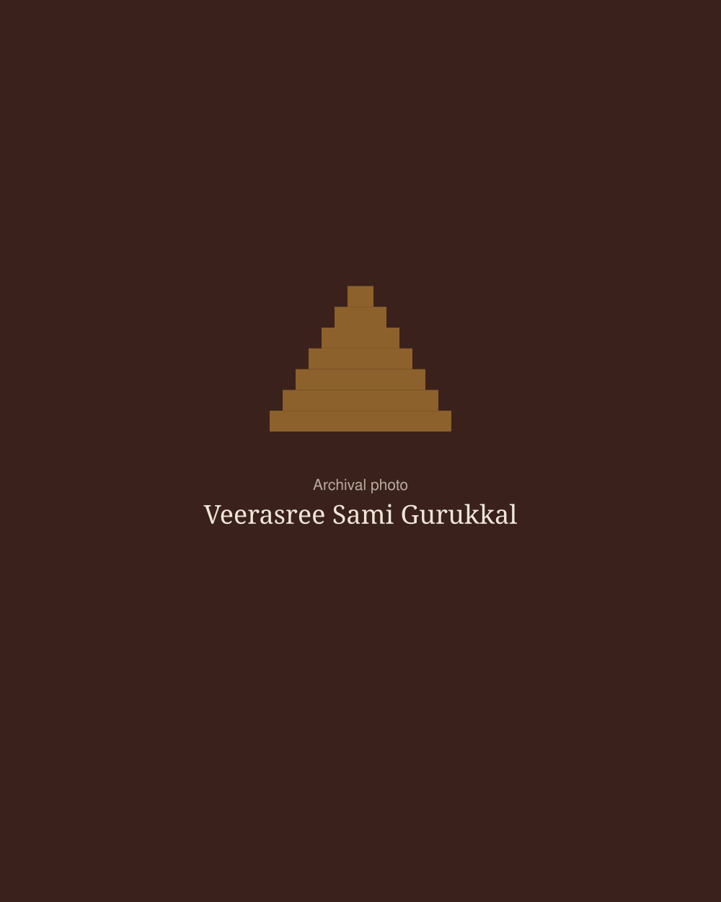

A lineage carried since 1952
A temple of Kalaripayattu and traditional healing in Kozhikode, founded by Veerasree Sami Gurukkal.

How it began
Hindustan Kalari Sangham began in 1952, when a young Kalari practitioner from Calicut named Swaminathan opened a Kalari at Puthiyara.
Initiated into Kalaripayattu at seven, and forced by family circumstances to leave school and work in a tile factory, he never let go of his learning, going on to study Ayurveda and the Tantra shastras.
Known to generations as Veerasree Sami Gurukkal, he treated patients from across India and grew the Sangham into branches throughout Calicut district and beyond. Since his passing in 2006, his students and family have carried the lineage forward through daily training, healing and the annual Gurusmriti in his memory.
The line of teachers
Gurukkal is the title given to a master of the Kalari.
Kottakkal Kanaran Gurukkal
Guru Govindan Kuttynambiar
Veerasree Sami Gurukkal
Milestones
- 1934
Swaminathan, later Veerasree Sami Gurukkal, is born in Calicut.
- c. 1941
He is initiated into Kalaripayattu at the age of seven.
- 1952
He founds Hindustan Kalari Sangham at Puthiyara.
- 2006
Sami Gurukkal passes away. Gurusmriti, the remembrance of the guru, has been held in his memory every year since.
- 2010
Lakshmanan Gurukkal founds Kalarigram near Auroville.
- 2022
Online Kalaripayattu classes begin.
- 2026
The Sangham represents India, with Kalarigram, at the BRICS Traditional and Indigenous Demonstration Games.
Three pillars
Training
Kalaripayattu taught step by step in the lineage’s own way, in the Kalari and online.
ClassesHealing
Marma Chikitsa and traditional fracture care, practised at the Sangham since its beginning.
HealingDevotion
Poojas, Guru Purnima and the annual Gurusmriti keep the Kalari a place of worship.
The Kalari year